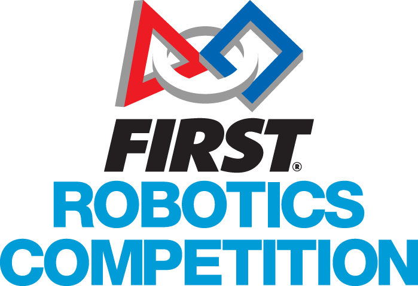

FIRST（For Inspiration and Recognition of Science and Technology，科学技术认知鼓励基金会）是由美国著名工程师和发明家 Dean Kamen 先生于 1989 年创立的非盈利组织，旨在激励青少年积极投身于科学、技术、工程和数学四大领域，培养他们成为未来科学技术领域的杰出领导者。在这项比赛中，高中生们将团队合作，自主设计、制造和操作机器人，并在比赛中与来自世界各地的其他队伍竞争。
Next Innovation 是一个以机器人科技研发为载体的创新实践基地。面向中小学生，定制个性化机器人学习指导方案，目标是让学生在接触最顶尖机器人赛事的同时，激发对科技的创新探索精神, 感受 STEM 带来的乐趣。
Next Innovation 科研基地主营项目为 FRC 竞赛培训，旗下 Team 8214 Cyber Unicorn 和 Team 8583 Juggernuts 是两支来自中国广州的高中机器人队伍。
#8214 2023
#8214 2022
#8583 2022
#8214 2020
#9112 2019
NI 主营项目
FRC 机器人竞赛

科创赛事辅导
NI 为广大中小学生提供科创赛事辅导项目，旨在帮助学生参加各类科技创新竞赛，并在比赛中取得优异成绩。NI 会根据学生团队的创新研究方向及对应的知识体系进行课程研发和定制，帮助学生系统性学习相关知识和技能。课程内容包括调研、硬件、软件等多个方面，涵盖了科创赛事所需的各项技术和技能。NI 的科创赛事辅导项目不仅能够帮助学生取得更好的成绩，更重要的是能够培养学生的创新意识和创业精神，为他们未来的发展打下坚实的基础。